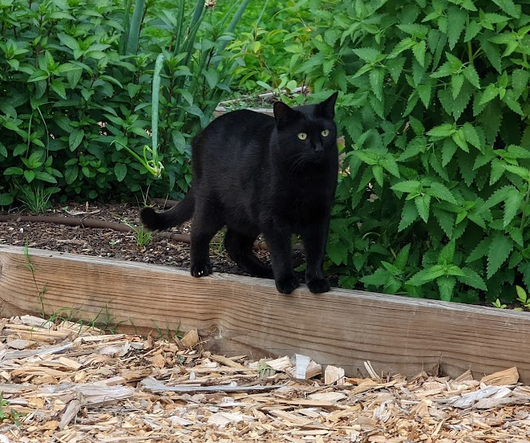

SID


-
BioSid (short for Obsidian) is a large black cat with thick fur. Sid is my cat and he has one sister - Ember.
-
PersonalitySid is notorious on my street for being extremely friendly, and for being a knucklehead. His favorite activities include rolling around on the sidewalk waiting for someone to walk by and pet him, and laying in the road and playing chicken with cars.